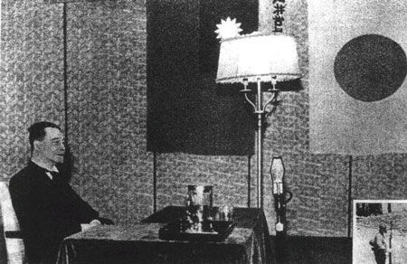

为什么汉奸几乎都是从左派蜕变出来的
2006/8/30 20:44:04

昨天有人谈到汉奸走红的问题，其实这不是问题。走红并不是说一定是好的，走红只不过说明关注多，按这种意思，希特勒一直都走红，研究不断。但问题的关键不是汉奸能否走红，而是为什么汉奸几乎都是从左派蜕变出来的。
谁都知道，最大的汉奸汪精卫，原来在国民党里是左派，喊起革命来比谁都起劲，后来杀起共产党也一点不比所谓的中正先生差，更厉害的是，当起汉奸来简直是天生的材料。更有讽刺意义的是，陈公博、周佛海的像还不一直挂在上海一大纪念馆里？这两位是什么？大概不用提醒了吧。
在中国人的概念里，左派就是进步的、革命的，因此左派是最容易挂羊头卖狗肉的。因此当左派在喊口号时，千万不要当真，历史的经验证明，口号喊得越响的，反过来更恶毒。有一句很俗的话是专门针对这种人的，叫“反转猪肚子是屎”，中华民族几千年的历史，看这一点还是很有经验的。
相比以当狗为乐趣的右派，左派是更危险更鱼龙混杂、蜕变起来更是争先恐后的。否则也不会出现汪精卫、陈公博、周佛海这种世纪大汉奸。这种羊头狗肉的把戏，显然还会经常被把戏，还大有各位看的时候！
回复